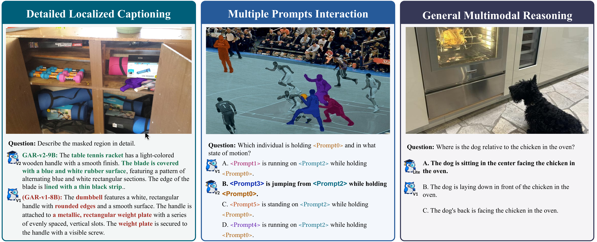
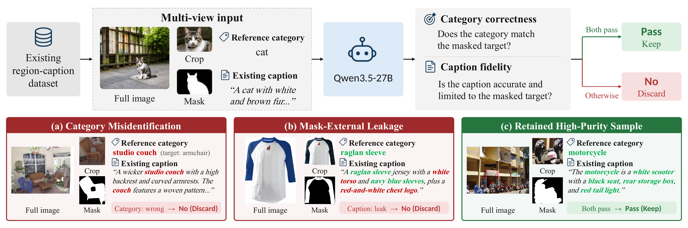
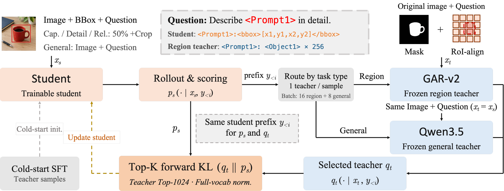

Grasp Any Region Series · Extended from ICLR 2026
Grasp Any Region v2:
Generalist Multimodal Region Experts at Scale
Peking University
UC Merced
CASIA
Wuhan University
TL;DR: We first scale mask-grounded regional comprehension onto native dynamic-resolution Qwen3.5 backbones via single-pass multi-view visual data auditing and expanded relational reasoning supervision (GAR-v2). We then distill its privileged mask-grounded expertise into an unmodified general-purpose Qwen3.5 student (GAR-Lite) via task-asymmetric
Crop50 inputs and two-stage dual-teacher on-policy distillation (OPD)—acquiring strong regional perception and multi-region reasoning while preserving general multimodal capabilities and native vLLM deployment without custom visual modules.

Overview of GAR-v2 and GAR-Lite. (a–b) GAR-v2 purifies synthetic regional captions via a single-pass multi-view visual audit with Qwen3.5-27B and scales multi-granularity relational reasoning on Qwen3.5 backbones. (c) GAR-Lite distills GAR-v2's mask-grounded capabilities into an unmodified Qwen3.5 student via two-stage dual-teacher on-policy distillation (OPD), avoiding both architectural intrusion and catastrophic forgetting.
📰 News
-
2026-11
We release the GAR-v2 and GAR-Lite codebase, two-stage dual-teacher
verlOPD pipeline, out-of-tree vLLM plugin, and interactive web demo! - 2026-01 🔥 Grasp Any Region has been accepted to ICLR 2026!
Abstract
While Multimodal Large Language Models (MLLMs) excel at holistic image understanding, comprehending the dense visual world requires analyzing fine-grained regional details alongside global scene context and inter-object relationships. Scaling regional comprehension to stronger foundation backbones and transferring it to standard general-purpose MLLMs face two critical bottlenecks: pervasive annotation noise (category misidentification and mask-external leakage) in automated regional caption corpora, and architectural intrusion coupled with severe catastrophic forgetting when fine-tuning general MLLMs on regional data.
We present a unified framework that first strengthens the mask-grounded specialized expert as a privileged teacher (GAR-v2) and then distills its regional capabilities into an unmodified general-purpose MLLM (GAR-Lite). First, we build GAR-v2 on native dynamic-resolution Qwen3.5 backbones by introducing a single-pass multi-view visual audit with Qwen3.5-27B that removes noisy caption annotations without text rewriting, paired with expanded multi-granularity relational reasoning supervision. Second, we diagnose local object recognition as the primary bottleneck of box-prompted VLMs and propose a task-asymmetric input protocol (Crop50) alongside a two-stage dual-teacher on-policy distillation (OPD) framework. By supervising student rollouts via token-level Top-K forward KL divergence from the frozen GAR-v2 regional teacher and the frozen Qwen3.5 base teacher, GAR-Lite achieves strong regional comprehension while largely retaining general multimodal capabilities in a standard, unmodified MLLM architecture.
What’s New in GAR-v2 & GAR-Lite?
Multi-View Visual Audit
Audits synthetic regional captions with Qwen3.5-27B over full-image, crop, and binary-mask views to eliminate category misidentification and mask-external leakage without rewriting text.
Privileged Mask Expert
Scales mask-conditioned prompt encoding and 16×16 RoI-Aligned Feature Replay onto dynamic-resolution Qwen3.5 backbones with enriched multi-region relational reasoning supervision.
Dual-Teacher On-Policy Distillation
Transfers mask-grounded expertise into an unmodified Qwen3.5 student via lightweight cold-start SFT and token-level Top-K forward KL from both regional and general teachers.
Drop-In vLLM Deployment
Enables zero-intrusion native vLLM serving for GAR-Lite with bounding boxes and crops, alongside a lightweight out-of-tree vLLM plugin for mask-exact GAR-v2 inference.
Interactive Demos
Interactive demonstrations of single-region detailed description, multi-region relational reasoning, and general visual question answering across point-selected masks and bounding boxes.
Single-Pass Multi-View Visual Data Audit

Caption Quality Filtering Workflow and Representative Examples. Existing synthetic regional caption corpora suffer from (a) category misidentification on small or occluded masks and (b) mask-external leakage that hallucinates surrounding context outside the binary mask. Our single-pass multi-view visual audit with Qwen3.5-27B inspects the full image, tight bounding-box crop, and crop-aligned binary mask simultaneously to retain only boundary-faithful descriptions (c), rejecting 40.8% of DAM and 34.1% of Fine-Grained-456K while improving recognition accuracy and caption quality.
Task-Asymmetric Dual-Teacher On-Policy Distillation

Overview of Two-Stage Dual-Teacher On-Policy Distillation (OPD).
Top: Task-asymmetric student–teacher input protocol. For single-region detailed captioning, the unmodified Qwen3.5 student (GAR-Lite) mixes BBox-only and BBox+Crop views (Crop50), while multi-region relational queries use 100% BBox; the privileged teacher (GAR-v2, πR) receives exact binary masks and 16×16 RoI-Aligned Feature Replay.
Bottom: After a 1-epoch lightweight teacher cold-start SFT on 90K prompts (60K regional + 30K general), on-policy student trajectories are supervised via token-level Top-K forward KL divergence from πR on regional prompts and the frozen Qwen3.5 base teacher (πG) on general prompts.
Diagnostic Insight
Recognition Bottleneck in Box-Prompted VLMs
Diagnostic evaluation on zero-shot Qwen3.5 shows that once ground-truth object categories are provided, BBox-only inputs match crop-based captioning scores—confirming that box-prompted VLMs are bottlenecked by local foreground recognition rather than language generation.
Stage 1 · Cold-Start
Lightweight Teacher Cold-Start SFT
One epoch of offline SFT on 60K regional responses from πR and 30K general responses from πG aligns the student with <PromptK> syntax and multi-region formatting without triggering the severe general-capability collapse of full-corpus regional SFT.
Stage 2 · Dual-Teacher OPD
On-Policy Top-K Forward KL Distillation
On student-generated rollouts, token-level Top-K forward KL against πR penalizes mask-external hallucinations on the student's own prefixes, while concurrent supervision from πG anchors general multimodal reasoning.
Experimental Results
Across six regional benchmarks and 11 general multimodal benchmarks, GAR-v2 achieves state-of-the-art regional perception and multi-entity relational reasoning, outperforming prior specialized region MLLMs and proprietary models. Distilled into an unmodified Qwen3.5 architecture, GAR-Lite inherits strong regional comprehension—with GAR-Lite-4B even surpassing PixelRefer-7B and its own GAR-v2-4B teacher on GAR-Bench-VQA—while largely preserving the base model's general multimodal capabilities.
| Method | Architecture / Input | GAR-VQA | GAR-Cap | DLC-Bench | ParaDLC | Ferret-Bench | MDVP Macro | 11-General Avg. (Δ Base) |
|---|---|---|---|---|---|---|---|---|
| Proprietary & Public General MLLMs | ||||||||
| GPT-4o | General MLLM | 53.5 | 51.5† | 61.5 | — | — | — | — |
| Gemini-2.5-Pro | General MLLM (Thinking) | 64.2 | 59.3† | 55.8 | — | — | — | — |
| Qwen3.5-2B (Base) | Native Qwen3.5 | 46.0 | 47.5 | 48.3 | 46.7 | 31.33 | 95.38 | 74.70 |
| Qwen3.5-4B (Base) | Native Qwen3.5 | 53.8 | 52.5 | 47.5 | 44.6 | 32.87 | 96.32 | 80.10 |
| Prior Specialized Region MLLMs | ||||||||
| DAM-3B | Focal Prompt + Crop | 38.2 | 13.7† | 64.5 | 57.2 | 55.0 | — | — |
| PixelRefer-2B | Qwen2.5-VL + Mask | 56.4 | 52.9 | 66.1 | 59.1 | — | 101.66 | — |
| PixelRefer-7B | Qwen2.5-VL + Mask | 62.7 | 67.2 | 68.3 | 55.8 | — | 101.12 | — |
| GAR-1B (ICLR'26) | InternVL3 + Mask/RoI | 50.6 | 60.3† | 67.9 | 58.4 | 56.0 | 105.16 | — |
| GAR-8B (ICLR'26) | InternVL3 + Mask/RoI | 59.9 | 65.2† | 67.4 | 59.2 | 64.8 | 116.46 | — |
| Ours: Privileged Mask Experts (GAR-v2) & Native Distilled Students (GAR-Lite) | ||||||||
| GAR-v2-2B | Qwen3.5-2B + Mask/RoI | 74.5 | 74.0 | 68.0 | 57.8 | 49.40 | 113.06 | 48.13 (−26.58) |
| GAR-v2-4B | Qwen3.5-4B + Mask/RoI | 71.9 | 75.0 | 68.3 | 57.6 | 50.85 | 114.66 | 59.85 (−20.25) |
| GAR-v2-9B | Qwen3.5-9B + Mask/RoI | 75.0 | 75.0 | 67.9 | 58.2 | 51.55 | 117.16 | — |
| GAR-Lite-2B | Unmodified Qwen3.5-2B | 67.7 | 70.6 | 61.7 | 58.5 | 46.15 | 108.00 | 72.96 (−1.74) |
| GAR-Lite-4B | Unmodified Qwen3.5-4B | 73.1 | 70.1 | 65.5 | 58.0 | 47.15 | 114.62 | 79.79 (−0.31) |
BibTeX
@article{wang2026garv2,
title = {Grasp Any Region v2: Generalist Multimodal Region Experts at Scale},
author = {Wang, Yuhao and Yuan, Haobo and Wang, Haochen and Sun, Yueyi and Tong, Yunhai and Qi, Lu and Zhang, Zhaoxiang and Yang, Ming-Hsuan and Li, Xiangtai},
journal = {arXiv preprint},
year = {2026}
}
@inproceedings{wang2026gar,
title = {Grasp Any Region: Towards Precise, Contextual Pixel Understanding for Multimodal LLMs},
author = {Wang, Haochen and Wang, Yuhao and Zhang, Tao and Zhou, Yikang and Li, Yanwei and Wang, Jiacong and Tian, Ye and Meng, Jiahao and Huang, Zilong and Mai, Guangcan and Wang, Anran and Tong, Yunhai and Wang, Zhuochen and Li, Xiangtai and Zhang, Zhaoxiang},
booktitle = {International Conference on Learning Representations (ICLR)},
year = {2026}
}